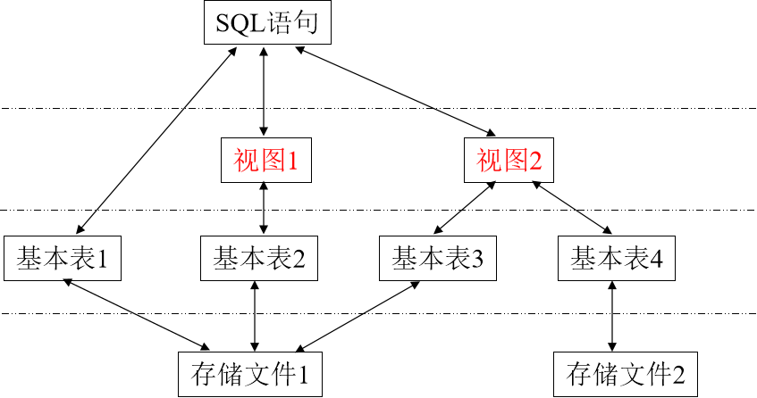
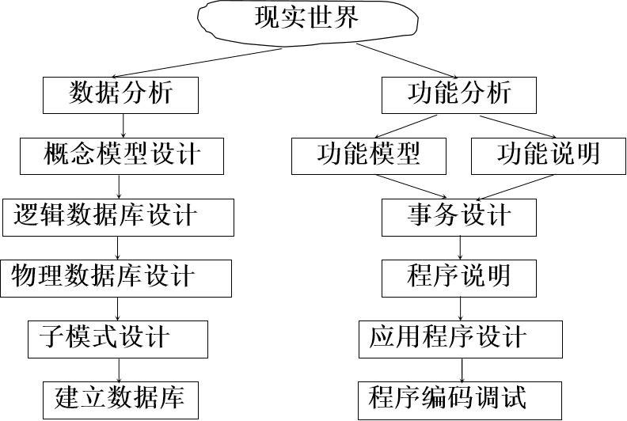
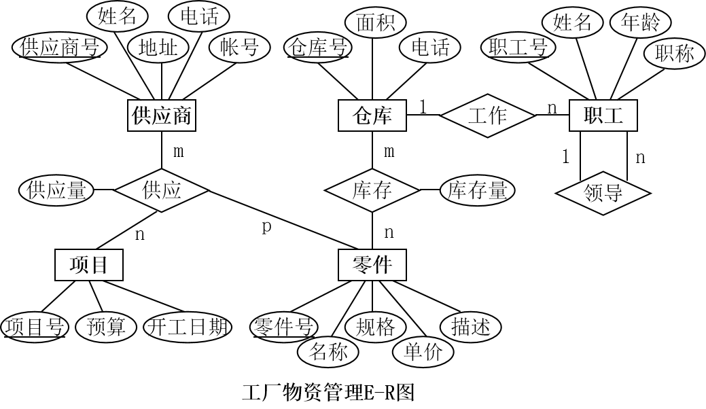

数据库系统知识整理
关系语言的种类
- 关系代数
- 关系演算（元组演算和域演算）
- SQL
关系的定义
- 候选码 (Candidate Key)：能唯一标识元组的属性(组)。
- 主码 (Primary Key)：多个候选码中选定一个作主码。
- 主属性 (Prime Attribute)：候选码中的诸属性。
- 非主属性 (Non-Key Attribute)：不出现在任何候选码中的属性。
传统的关系运算
- 并 (Union)
- 交 (Intersection)
- 差 (Difference)
- 广义笛卡尔积 (Extended Cartesian Product)
专门的关系运算
- 选择 ($\sigma$): 在某个关系中选择满足给定条件的诸元组(WHERE)
- 投影 ($\pi$): 从某个关系中选择出若干属性列组成新的关系(SELECT)
- 连接 ($\bowtie$): 从两个关系的笛卡尔积中选取属性间满足一定条件的元组
- 除 ($\div$): 设关系 R 除以关系 S 的结果为关系 T，则 T 包含所有在 R 但不在 S 中的属性及其值，且 T 的元组与 S 的元组的所有组合都在 R 中
- 重命名 ($\rho$): 将某个关系重命名为其它关系名
关系演算
关系演算就是用谓词来描述关系的构成(查询的结果)。按照谓词变元的不同分为元组关系演算和域关系演算，分别简称为元组演算和域演算。
元组演算例子
给出关系模式：
- S (Sno, Sname, Ssex, Sage, Sdep)
- C (Cno, Cname, Ccredit, Cpno)
- SC (Sno, Cno, Grade)
查询选修学号为“95002”的学生所选全部课程的学生学号。
$\{ t|\exists u(SC(u) \land \forall v(SC(v) \land v['Sno']='95002' \rightarrow \exists w(SC(w) \land w['Sno']=u['Sno'] \land w['Cno']=v['Cno'])) \land t['Sno']=u['Sno']) \}$
域演算例子
同上关系模式，查询选修了 C2 课程的学生学号和成绩。
$\{t_1, t_2 | \exists u_1 \exists u_2 \exists u_3 (SC(u_1, u_2, u_3) \land u_2='c2' \land t_1=u_1 \land t_2=u_3)\}$
or
$\{t_1, t_2 | SC(t_1, 'C2', t_2)\}$
SQL 行为
- 数据查询：SELECT
- 数据定义：CREATE，DROP，ALTER
- 数据操纵：INSERT，UPDATE，DELETE
- 数据控制：GRANT，REVOKE，COMMIT，ROLLBACK
SQL 三级模式

- 外模式：对应图中视图层
- 模式：对应基本表层
- 内模式：对应存储文件层
SQL 数据定义
建表，删表，改表
1CREATE TABLE <表名> (
2 <列名> <数据类型> [ <列级完整性约束条件> ]
3 [，<列名> <数据类型>[ <列级完整性约束条件>] ] …
4 [，<表级完整性约束条件> ]
5);
6
7DROP TABLE <表名>;
8
9ALTER TABLE <表名>
10[ ADD <新列名> <数据类型> [ 完整性约束 ] ]
11[ DROP <完整性约束名> <列名>]
12[ ALTER <列名> <数据类型> ];
常用完整性约束：
1、实体完整性约束
主码不能取空值。
1PRIMARY KEY (<列名>)
2、参照完整性约束
在两个表之间建立关系时，要求外键中必须有一个与主键中的值相匹配的值。
1FOREIGN KEY (<列名>) REFERENCES <表名>(<列名>)
3、用户定义完整性约束
用户定义的完整性可以帮助用户更好地控制自己的数据，以及更好地实现自己的目标。
- 唯一性约束：UNIQUE (不能取相同值但允许多个空值)
- 非空值约束：NOT NULL
- CHECK 约束：CHECK (<谓词>)
- 断言(Assertion)约束
索引
- 单一索引 (Unique Index)：每一个索引值只对应唯一的数据记录。
- 聚簇索引 (Cluster Index)：索引项顺序与表中数据记录的物理顺序一致。
- 普通索引：允许一个Search-key项对应多条存储记录。
1CREATE [UNIQUE] [CLUSTER] INDEX <索引名>
2ON <表名>(<列名>[<次序>][,<列名>[<次序>] ]…);
3
4DROP INDEX <索引名>;
SQL 数据查询
SELECT & WHERE
1SELECT [ ALL(默认) | DISTINCT ] <目标列表达式1> [, <目标列表达式2>] …
2FROM <表名或视图名1>[, <表名或视图名2> ] …
3[ WHERE <条件表达式> ]
4[ GROUP BY <列名1> [ HAVING <条件表达式> ] ]
5[ ORDER BY <列名2> [ ASC(默认) | DESC ] ] ;
WHERE 采用查询条件：
- 比较 (NOT) =, <, >, <=, >=, <>, !=, !>, !<
- 确定范围 (NOT) BETWEEN … AND …
- 确定集合 (NOT) IN
- 字符匹配 (NOT) LIKE
- 空值 IS (NOT) NULL
- 多重条件 AND, OR
字符串匹配
1[NOT] LIKE ‘<匹配模板>’ [ESCAPE ‘<换码字符>’]
% (百分号)：代表任意长度(可以为 0)的字符串。
_ (下横线)：代表任意单个字符。
外连接
1SELECT [ ALL | DISTINCT ] <目标列表达式1> [, <目标列表达式2>] …
2FROM <table_source1>
3INNER|{LEFT | RIGHT | FULL [OUTER]} JOIN <table_source2>
4ON <search_condition >
5[ WHERE <条件表达式> ]
外连接与普通连接的区别：
普通连接操作只输出满足连接条件的元组，外连接操作以指定表为连接主体，将主体表中不满足连接条件的元组一并输出。
左外连接（⟕）：连接条件右边出现空行 右外连接（⟖）：连接条件左边出现空行 左右外连接（全外连接，⟗）：在连接条件的左右两边出现空行
“左”外连接，即以“左”表为主表。
集函数
- COUNT（[DISTINCT | ALL] *）
- COUNT（[DISTINCT | ALL] <列名>）
- SUM（[DISTINCT | ALL] <列名>）
- AVG（[DISTINCT | ALL] <列名>）
- MAX（[DISTINCT | ALL] <列名>）
- MIN（[DISTINCT | ALL] <列名>）
集函数只能用于 SELECT 子句和 HAVING 短语之中，而绝对不能出现在 WHERE 子句中。
ANY, ALL, EXISTS
- ANY：某些值
- ALL：所有值
- EXISTS：对应存在量词 $\exists$，不返回数据，只产生逻辑真/假值
关于 EXISTS 的一些知识点：
- 一些带EXISTS或NOT EXISTS谓词的子查询不能被其它形式的子查询等价替换。
- 所有带 IN 谓词、比较运算符、ANY 和 ALL 谓词的子查询都能用带 EXISTS 谓词的子查询等价替换。
- [NOT] EXISTS 子查询的效率要优于连接查询和集合查询（IN 谓词查询）。
- EXISTS 通常引入的是相关子查询，而 IN 更多的是不相关子查询。
一个例子：
还是之前那个例子，查询至少选修学生95002所选全部课程的学生学号：
通过之前编写的元组演算表达式，通过等价转换：$p \rightarrow q \iff \neg p \vee q$，可以消去全称量词，得到使用存在量词的表达式，然后可以简单地写出一下语句：
1SELECT Sno
2FROM SC SCX
3WHERE NOT EXISTS
4 (SELECT *
5 FROM SC SCY
6 WHERE SCY.Sno='95002' AND NOT EXISTS
7 (SELECT *
8 FROM SC SCZ
9 WHERE SCZ.Sno=SCX.Sno AND
10 SCZ.Cno=SCY.Cno));
集合查询
将两个 SELECT – FROM – WHERE 查询块用集合操作语句联结起来。
- 并操作 (UNION)
- 交操作 (INTERSECT)
- 差操作 (MINUS, SQL Server 中用 EXCEPT)
SQL 优化
- 在 WHERE 子句中应把最具限制性的条件放在最前面
- WHERE 子句中字段的顺序应和索引中字段顺序一致
- [NOT] EXISTS 子查询的效率要优于连接查询和集合查询
SQL 数据更新
1INSERT
2INTO <表名> [(<属性列1>[, <属性列2 >…)]
3VALUES (<常量1> [, <常量2>] … );
4
5UPDATE <表名>
6SET <列名>=<表达式>[, <列名>=<表达式>]…
7[WHERE <条件>];
8
9DELETE
10FROM <表名>
11[WHERE <条件，缺省表示要修改表中的所有元组>];
SQL 视图
视图是从一个或几个基本表（或视图）导出的表，它与基本表不同，是一个虚表，它对应三级模式/两级映象中体系结构中的外模式和外模式/模式的映象。
注：两级映象指的是：外模式／模式映象 和 模式／内模式映象
1CREATE VIEW <视图名> [(<列名> [，<列名>]…)]
2AS <子查询>
3[WITH CHECK OPTION];
4
5DROP VIEW <视图名>;
关于 “WITH CHECK OPTION”，对该视图进行操作时，将自动带上该条件，如果不满足则拒绝操作。
SQL 数据控制
数据控制是指 DBMS 用来保证数据库正确稳定运行所提供的对数据的管理机制。
SQL中的数据控制包括事务管理和数据保护。
授权
将数据库中的某些对象的某些操作权限赋予某些用户
1GRANT <权限>[,<权限>]...
2 [ON <对象类型> <对象名>]
3 TO <用户>[,<用户>]...
4 [WITH GRANT OPTION];
指定了 WITH GRANT OPTION 子句, 获得某种权限的用户还可以把这种权限再授予别的用户。
一些例子：
1GRANT ALL PRIVILIGES /* 所有权限 */
2ON TABLE Student, Course
3TO U2, U3
4WITH GRANT OPTION;
5
6GRANT SELECT
7ON TABLE SC
8TO PUBLIC; /* 所有用户 */
9
10GRANT UPDATE (Sno), SELECT
11ON TABLE Student
12TO U4;
收回权限
从指定用户那里收回对指定对象的指定权限。
1REVOKE <权限>[,<权限>]...
2[ON <对象类型> <对象名>]
3FROM <用户>[,<用户>]...;
关于游标
游标是嵌入式 SQL 引入的机制，是 SQL 查询语句向宿主语言提供查询结果集的一段公共缓冲区。
嵌入式 SQL 提供了逐条处理游标记录的功能，将当前记录各字段值推入主变量，并移动游标指针。
游标解决了 SQL 语言只有记录处理能力的问题，将记录的各字段赋给主变量，交由宿主语言进行单值处理。
SQL 存储过程及触发器
存储过程
存储过程（Stored Procedure） 是一组为了完成特定功能的 SQL 语句集，经编译后存储在服务器端数据库中，用户通过指定存储过程的名字并给定参数（如果该存储过程带有参数）来执行它。
1CREATE [ OR ALTER ] { PROC | PROCEDURE }
2 [schema_name.] procedure_name [ ; number ]
3 [ { @parameter_name [ type_schema_name. ] data_type }
4 [ VARYING ] [ NULL ] [ = default ] [ OUT | OUTPUT] | [READONLY]
5 ] [ ,...n ]
6[ WITH <procedure_option> [ ,...n ] ]
7[ FOR REPLICATION ]
8AS { [ BEGIN ] sql_statement [;] [ ...n ] [ END ] }
9[;]
10
11<procedure_option> ::=
12 [ ENCRYPTION ]
13 [ RECOMPILE ]
14 [ EXECUTE AS Clause ]
一个例子：
1USE pubs
2GO
3if exists (SELECT name FROM sysobjects
4 WHERE name = 'titles_sum' AND type = 'p ')
5 DROP PROCEDURE titles_sum
6
7GO
8CREATE PROCEDURE titles_sum @stor_id char(4), @sum smallint
9OUTPUT AS
10 SELECT ord_num, ord_date, payterms, title_id, qty
11 FROM sales
12 WHERE stor_id = @stor_id
13 SELECT @sum = sum (qty)
14 FROM sales
15 WHERE stor_id = @stor_id
16 Return (0)
17GO
触发器
触发器是一种特殊类型的存储过程。它与存储过程的区别：触发器主要是通过事件进行触发而被执行的，而存储过程可以通过存储过程名字被直接调用执行。
当对某一表进行诸如 UPDATE、 INSERT、DELETE 这些操作时，SQL Server 就会自动执行触发器所定义的 SQL 语句。
1CREATE [ OR ALTER ] TRIGGER [ schema_name . ]trigger_name
2ON { table | view }
3[ WITH <dml_trigger_option> [ ,...n ] ]
4{ FOR | AFTER | INSTEAD OF }
5{ [ INSERT ] [ , ] [ UPDATE ] [ , ] [ DELETE ] }
6[ WITH APPEND ]
7[ NOT FOR REPLICATION ]
8AS { sql_statement [ ; ] [ ,...n ] | EXTERNAL NAME <method specifier [ ; ] > }
9
10<dml_trigger_option> ::=
11 [ ENCRYPTION ]
12 [ EXECUTE AS Clause ]
13
14<method_specifier> ::=
15 assembly_name.class_name.method_name
一个例子：
1CREATE TRIGGER utitle1 ON titles
2FOR UPDATE
3AS
4declare @rows int
5SELECT @rows=@@rowcount
6if @rows=0
7 RETURN
8if UPDATE (title_id)
9BEGIN
10 if @rows > 1
11 BEGIN
12 raiserror( 'update to primary keys of multiple row is not permitted' , \\
13 16,10)
14 ROLLBACK TRANSACTION
15 RETURN
16 END
17 UPDATE t SET t.title_id=i.title_id
18 FROM titleauthor t, inserted i, deleted d
19 WHERE t.title_id=d.title_id
20END
21RETURN
原理解析：
在触发器的执行过程中，系统会自动建立和管理两个逻辑表：插入表（inserted）和删除表（deleted）。
这两个表与触发器所对应的基本表有着完全相同的结构，但为只读表，驻留于内存之中，直到触发器执行完毕，系统会自动删除。
这两个表是事务回滚的重要依据。
事务
定义
事务 (Transaction) 是用户定义的一个数据库操作序列，这些操作要么全做，要么全不做，是一个不可分割的工作单位。
1BEGIN TRANSACTION
2SQL 语句1
3SQL 语句2
4……
5ROLLBACK
ACID 特性
- 原子性（Atomicity）：事务中包括的诸操作要么都做，要么都不做。
- 一致性（Consistency）：事务执行的结果必须是使数据库从一个一致性状态变到另一个一致性状态。
- 隔离性（Isolation）：一个事务的执行不能被其他事务干扰，而影响它对数据的正确使用和修改。
- 持久性（Durability）：一个事务一旦提交，它对数据库中数据的改变就应该是永久性的，接下来的其他操作或故障不应该对其执行结果有任何影响。
并发导致的问题
一、丢失修改（lost update）
当两个事务并发执行但没有锁的控制，可能导致其中一个事务的处理结果被覆盖，也就是丢失了修改。
二、不可重复读（non-repeatable read）
事务 1 读取某一数据后：
- 事务 2 对其做了修改，当事务 1 再次读该数据时，得到与前一次不同的值
- 事务 2 插入或删除了部分记录，当事务 1 再次读取数据时，发现某些记录消失了或多了（也称为幻读）
三、脏读（dirty read）
事务 1 修改某一数据，并将其写回磁盘，事务 2 读取同一数据后，事务 1 由于某种原因进行回滚。事务 2 之前读到的数据就与数据库中的数据不一致，是不正确的数据，又称为“脏”数据。
隔离级别
(1) Read Uncommitted
一个事务读的时候允许其他事务操作，写的时候其他事物只能读不能写，允许读到未提交的事务。
解决了丢失修改问题。
(2) Read Committed
一个事务读的时候允许其他事务操作，修改的时候不允许任何其它事务读写，只允许读已提交的事务。
解决了丢失修改问题和脏读问题。
(3) Repeatable Read
一个事务读取的时候其他事务不可修改（允许读），写事务的时候禁止其他任何事务。
解决了丢失修改问题，脏读问题和不可重复读的第一种问题（未解决幻读问题）。
(4) Serializable
事务可串行化执行，使用表级锁，解决之前提到的所有问题。
封锁
封锁协议
封锁就是事务 T 在对某个数据对象（例如表、记录等）操作之前，先向系统发出请求，对其加锁。
加锁后事务 T 就对该数据对象有了一定的控制，在事务 T 释放它的锁之前，其它的事务不能更新此数据对象。
锁的种类
1、排它锁（eXclusive lock，简记为 X 锁，又称为写锁）
若事务 T 对数据对象 A 加上 X 锁，则只允许 T 读取和修改 A，其它任何事务都不能再对 A 加任何类型的锁，直到 T 释放 A 上的锁。
2、共享锁（Share lock，简记为 S 锁，又称为读锁）
若事务 T 对数据对象 A 加上 S 锁，则其它事务只能再对 A 加 S 锁，而不能加 X 锁，直到 T 释放 A 上的 S 锁。
X 和 X, S 锁是不相容的，S 和 S 锁是相容的。
两段锁协议 2PL
事务分为两个阶段
- 第一阶段是获得封锁，也称为扩展阶段
- 第二阶段是释放封锁，也称为收缩阶段
一个封锁序列：
Slock A … Slock B … Xlock C … Unlock B … Unlock A … Unlock C
活锁
由于系统调度的原因，某些事务的加锁请求得不到响应而永远等待下去，称为活锁。
解决方法：采用合理的调度方法，如先来先服务 (FCFS) 策略。
死锁
两个或多个事务都已封锁了一些数据对象，然后又都请求对已被其他事务封锁的数据对象加锁，从而出现死等待。
解决方法：
- 预防死锁
- 一次封锁法：要求每个事务必须一次将所有要使用的数据全部加锁，否则就不能继续执行。
- 顺序封锁法：顺序封锁法是预先对数据对象规定一个封锁顺序，所有事务都按这个顺序实行封锁。
- 诊断死锁
- 超时法：如果一个事务的等待时间超过了规定的时限，就认为发生了死锁。
- 等待图法：用事务等待图动态反映所有事务的等待情况。
- 解除死锁：选择一个处理死锁代价最小的事务，将其撤消，释放此事务持有的所有的锁，使其它事务能继续运行下去。
其中，事务等待图是一个有向图 G=(T，U)，T 为结点的集合，每个结点表示正运行的事务，U 为边的集合，每条边表示事务等待的情况。
若 T1 等待 T2，则 T1，T2 之间划一条有向边，从 T1 指向 T2。
并发控制子系统周期性地（比如每隔 1 min）检测事务等待图，如果发现图中存在回路，则表示系统中出现了死锁。
可串行化调度
几个事务的并行执行是正确的，当且仅当其结果与按某一次序串行地执行它们时的结果相同。这种并发调度策略称为可串行化（Serializable）的调度。
事务遵守两段锁协议是可串行化调度的充分条件，而不是必要条件。
封锁粒度
X 锁和 S 锁都是加在某一个数据对象上的，封锁的对象可以是:
- 逻辑单元: 属性值、属性值集合、元组、关系、索引项、整个索引、整个数据库等
- 物理单元：页（数据页或索引页）、物理记录等
封锁对象的大小称为封锁的粒度 (Granularity)。
多粒度封锁 (multiple granularity locking)：在一个系统中同时支持多种封锁粒度供不同的事务选择。
范式
- 1NF: 关系模式 R 的所有属性都是不可分的基本数据项
- 2NF: 关系模式 $R \in 1NF$，且每一个非主属性都完全函数依赖于 R 的码（而不是部分依赖）
- 3NF: 关系模式 $R \in 2NF$，且不存在非主属性对码的传递依赖
- BCNF: 关系模式 $R \in 3NF$，且对于 R 的每个函数依赖 $X \rightarrow Y (Y \nsubseteq X)$，X 必包含码
数据库设计
数据库设计是指对于一个给定的应用环境，构造最优的数据库模式，建立数据库及其应用系统，使之能够有效地存储数据，满足各种用户的应用需求（信息要求和处理要求）。

需求分析
需求分析就是通过详细调查现实世界要处理的对象（现实业务），充分了解原系统（手工系统或计算机系统），明确用户的各种需求，并在此基础上确定新系统的功能。需求分析包括两个步骤：需求信息的收集和分析。
需求信息的收集又称为系统调查，即了解用户的组织机构设置、主要业务活动和职能，以及对新系统的要求。
需求信息的分析就是对收集到的需求信息进行加工整理，以数据流图和数据字典的形式进行描述，作为需求分析阶段的成果，这也是下一步设计的基础。
概念模型设计
概念结构设计就是将现实事物以不依赖于任何数据模型的方式加以描述，目的在于以符号化的形式正确地反映现实事物及事物与事物之间的联系。
概念结构设计的内容就是建立概念模型。
这是一个通过 E-R 图构建概念模型的例子：

逻辑结构设计
逻辑结构设计是对数据在计算机中的组织形式的设计，即依照 DBMS 支持的数据模型，设计用户数据的组织形式(模式设计)。同样，逻辑结构设计也是建立在概念结构设计的基础上，为下一步数据的存储设计(物理设计)作准备。
数据库恢复技术
恢复操作的基本原理是冗余，即利用存储在系统其它地方的冗余数据来重建数据库中已被破坏或不正确的那部分数据。
故障种类
- 事务故障：某个事务在运行过程中，由于种种原因未运行至正常，终止点就夭折了
- 系统故障：整个系统的正常运行突然被破坏，所有正在运行的事务都非正常终止，内存中数据库缓冲区的信息全部丢失，外部存储设备上的数据未受影响
- 介质（硬件）故障：存储数据库的设备（如硬盘）发生故障，使存储在其上的数据部分丢失或全部丢失
数据转储（backup）
转储是指 DBA 将整个数据库复制到磁带或另一个磁盘上保存起来的过程。 这些备用的数据文本称为后备副本或后援副本。
转储操作的分类：
- 静态转储：在系统中无运行事务时进行转储，转储开始时数据库处于一致性状态，转储期间不允许对数据库的任何存取、修改活动。
- 动态转储：转储操作与用户事务并发进行，转储期间允许对数据库进行存取或修改。
- 海量转储：每次转储全部数据库。
- 增量转储: 只转储上次转储后更新过的数据。
登记日志文件（logging）
日志文件（log）是用来记录事务对数据库的更新操作的文件。
日志文件的格式及内容：
- 以记录为单位的日志文件
- 各个事务的开始标记(BEGIN TRANSACTION)
- 各个事务的结束标记(COMMIT或ROLLBACK)
- 各个事务的所有更新操作
- 与事务有关的内部更新操作
- 以数据块为单位的日志文件
- 事务标识
- 操作类型（插入、删除或修改）
- 操作对象（记录ID、Block NO.）
- 更新前数据的旧值（对插入操作而言，此项为空值）
- 更新后数据的新值（对删除操作而言, 此项为空值）
恢复策略
数据恢复就是在发生故障、数据被破坏时，根据后被副本和事务日志文件，将数据库恢复到故障前的正确状态（一致性状态）。
根据故障各类的不同，有不同的恢复方法：
- 事务故障：由恢复子系统应利用日志文件撤消（UNDO）此事务已对数据库进行的修改。
- 系统故障：Undo 故障发生时未完成的事务，Redo 已完成的事务。
- 介质故障：重装数据库，使数据库恢复到一致性状态，重做已完成的事务。